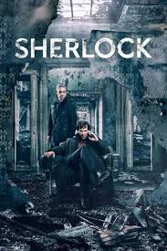

მთავარ გვერდზე დაბრუნება

ფილმის სახელი: შერლოკი
ფილმის შეფასება: 9.0 / 10
ფილმის მოკლე აღწერა: კონან დოილის ხატოვანი დეტექტივის უცნაური ინტერპრეტაცია მას თანამედროვე ლონდონის „მაღალფუნქციურ სოციოპათად“ წარმოაჩენს. გამოძიებაში მას ეხმარება ავღანეთის ომის ვეტერანი ჯონ უოტსონი, რომელიც ჰოლმსს საერთო ნაცნობმა გააცნო.